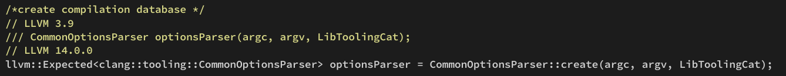
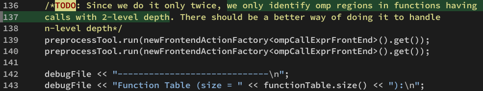

2203-OMP2CD重新实现
之所以会有这一片文章，是因为 LLVM OMP2CD 的项目中出现了一些不太符合实验数据的情况，其项目完整性和项目可用性存疑。在这里提出一些我的个人异议。并且基于此异议提出新的个人实现方案。
由于一周前 LLVM14 正式发布稳定版本，因此之后的实现方案基于 LLVM14 进行。（好吧其实我个人之会 LLVM9 以前的项目框架，12 还在学习中，之后打算写一个 LLVM12 的学习笔记）
论文阅读
首先看论文原文： https://dl.acm.org/doi/pdf/10.1145/3155288

走的是一个传统的 LLVM 框架：
- 首先是前端分析生成 AST
- 之后在 AST 基础上生成 Annotation
- 多粒度并行转换，Codelet：细，TP：粗
- CDG 转换，Codelet Graph
- 代码生成
TP Rule：
- TP- 1: The declaration of a function, other than main(), that contains an omp executable directive.
- TP- 2: An omp region.
Codelet Rule:
- CBB- 1: An omp executable directive.
- CBB- 2: A call to a function containing an omp executable directive.
- CBB- 3: The first statement in an omp region.
- CBB- 4: The first statement in a function, other than main(), containing an omp executable directive.
- CBB- 5: The first statement of a branch, provided any of the branch’s parent nodes are part of a CBB.
- CBB- 6: The implicit barrier of an omp region.
- CBB- 7: The statement following a CBB whose leader was created using rules CBB-1, CBB-2, or CBB-6.
翻译器逻辑整理
维持代码运行的内容分布在两个部分里：
- extra-tools
- clang
1 | |
移植 llvm 14 已经完成：
https://github.com/Chivier/chranslate
思路整理
如果我们使用 LLVM 的框架，我们需要遍历 AST。
读取命令行参数
只处理两层以内的 omp 嵌套。
代码精读：
评价和思考
这个论文的工作其实不复杂，可以说非常工程，首先先评价一下这个工作。这个工作虽然发了 TACO，但是惨淡的引用量反应了很多问题：
- 项目代码混乱，对于AST的行为描述上没有很好的继承clang的优势，而是自己打散重新建立，不仅麻烦，而且有一些逻辑上错误
- 项目在clang的代码部分这边有很多疏漏，应该继承一个出来，而不是直接在clang的基础上改代码，（作者应该不太懂设计模式的问题）
- 项目的可用性存疑，在 omp 嵌套的时候很多时候没法跑，这个应该是第一点导致的
这个和 llvm-3.9 的历史也有一定的关系，有一些部分 API 不是作者不想进行继承，而是作者没有办法进行继承。
官网说明：
https://openmp.llvm.org/optimizations/OpenMPOpt.html
有一句：
LLVM, since version 11 (12 Oct 2020), has an OpenMP-Aware optimization pass as well as the ability to perform “scalar optimizations” across OpenMP region boundaries.
In-depth discussion of the topic can be found here.
说明 2020 年之前是不可能做成一个可以便捷拓展的项目的。